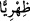
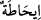
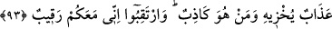

iddiânıza göre sırf kabileme gösterdiğiniz saygıdan dolayı beni öldürmekten geri
duruyorsunuz. Oysa Allah, emrine uyulmaya daha lâyıktır.
Şuayb bir bakıma demiş oluyor ki beni, Allah için korumanız kabilem için
korumanızdan daha evlâdır.
Araplar, emrine değer verilmeyen her şey için: “Falanca şu işi arkasına attı” derler.
Bu bakımdan âyetteki “
” kelimesi, “arka”ya mensûb demektir. “
” kelimesinin
meksûr olması ise nisbet yâ’sından ileri gelen bir değişikliktir.
“Şüphesiz Rabbim” aralarında kendisine değer vermemenizin de bulunduğu kötü
amellerinizden ibaret olan tüm “yapmakta olduklarınızı çepeçevre kuşatıcıdır.”
Hiçbiri kendisine gizli kalmaz. Siz O’nu istediğiniz kadar unutun, size yaptıklarınızın
karşılığını verecektir. Âyetteki “__WORD__ lâfzı, bir şeyi tam ve eksiksiz olarak kavramak
demektir. Allah’ın amelleri kavraması ise mecâzî bir ifâdedir.
93. “Ey kavmim, elinizden geleni yapın, doğrusu ben de yapacağım. Yakında
azâbın kime gelip kendisini rezil edeceğini ve kimin yalancı olduğunu bileceksiniz.
Gözetleyin, ben de sizinle beraber gözetlemekteyim.”
“Ey kavmim, elinizden geleni yapın” güç ve kudreti son derece yerinde olan kişiler
olarak güç ve takâtinizin yettiği, elinizden gelen kötülüğü bana yapın. Ya da “
”
kelimesinin mekân mânâsına göre: Bana karşı düşmanlık ve şirk konumunuzda devam
edin. Evet siz elinizden geleni yapın, ben de Allah’ın bana bahşettiği gücüm ölçüsünde
ve bana ihsan edeceği yardım ve destekle elimden geleni yapacağım.
Sanki onlar kendisine: “Peki yapabildiğimizi yapınca ne olacak?” diye sormuşlar ve
Şuayb (a.s.) buna cevaben şöyle demiştir: “Yakında azâbın kime” yâni hangimize ya da
geleceği kişiyi “gelip kendisini rezil” rüsvây ve zelil “edeceğini ve kimin yalancı
olduğunu bileceksiniz.” Şuayb (a.s.) böyle konuşuyor ve böylece bunların kendi başına
gelmeyip onların başına geleceğini kasdederek onlarla anlayacakları dilden konuşma
yolunu seçiyor: İçimizden kime azâb edileceğini ve kimin yalancı olduğunu, kimin
kendisine acıdığını ve kimin fiilinde hatâ ettiğini yakında bileceksiniz, diyor. Azâba
uğrayacak olanların da yalancıların da onlar olup kendisi olmadığını kastediyor.
“Gözetleyin” yani size söylediğim şeylerin sonucunu bekleyin, bunların doğruluğu
yakında ortaya çıkacak “ben de sizinle beraber gözetlemekteyim.” beklemekteyim.
Şuayb (a.s.), kavmiyle güzel konuştuğu, onlara son derece güzel cevaplar verebildiği